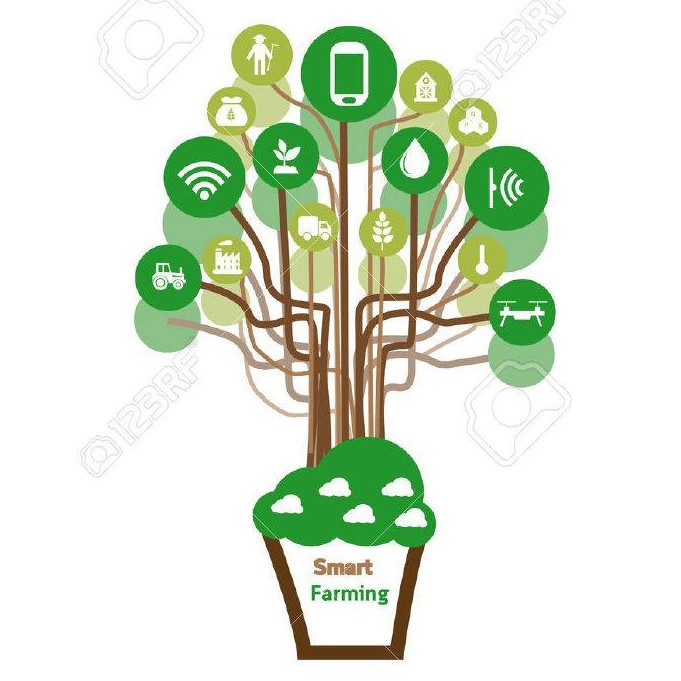

<nav class="navbar navbar-expand-lg">
  <a class="navbar-brand" href="#"></a>
  <button class="navbar-toggler" type="button" data-toggle="collapse" data-target="#navbarSupportedContent" aria-controls="navbarSupportedContent" aria-expanded="false" aria-label="Toggle navigation">
    <span class="navbar-toggler-icon"></span>
  </button>

  <div class="collapse navbar-collapse" id="navbarSupportedContent">
    <ul class="navbar-nav mr-auto">
      <li class="nav-item">
        <a class="nav-link" routerLink="/humidity">Humidity Sensor</a>
      </li>

      <li class="nav-item">
        <a class="nav-link" routerLink="/soil">Soil-moisture Sensor</a>
      </li>
      <li class="nav-item">
        <a class="nav-link" routerLink="/temp">Temprature Sensor</a>
      </li>
      <li class="nav-item">
        <a class="nav-link" routerLink="/ultrasonic">Ultra-sonic Sensor</a>
      </li>
      <div class="form-inline my-2 my-lg-0">
      <p class="right">Hello, {{displayname}}</p>
      </div>
    </ul>

  </div>
</nav>